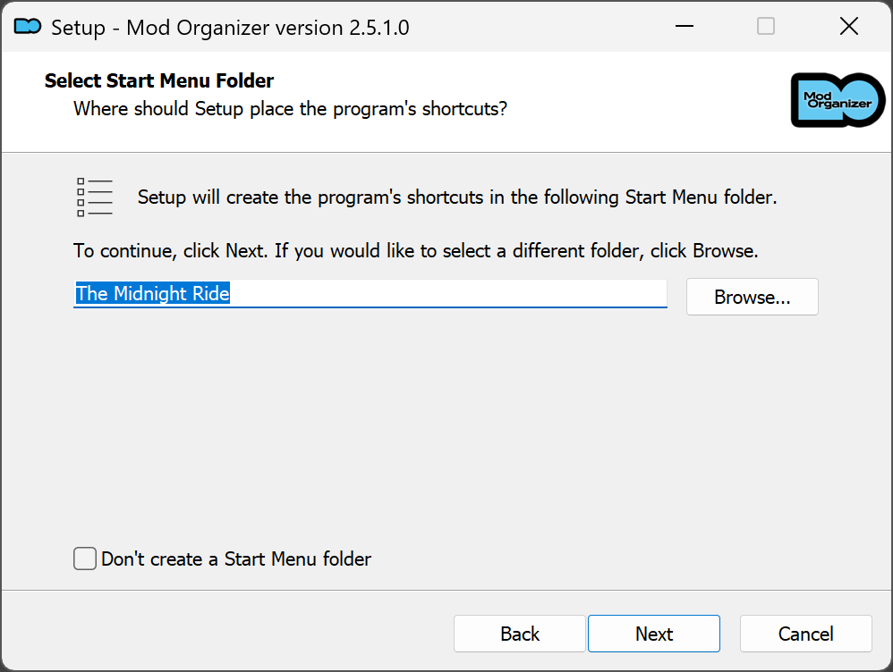

Mod Organizer 2
In this step, we will set up Mod Organizer 2 and INI files.
Mod Organizer 2 (MO2) is an open source game mod manager, mainly used for Bethesda games. Its main features are:
-
Virtual Filesystem (USVFS): MO2 does not install mods directly into the game's folder, but rather creates a virtual filesystem that the game reads from. This allows for:
- Safe mod installation and uninstallation,
- Being able to modify mod install order at any point,
- Having multiple profiles with different mod setups,
- Keeping orignal game files clean.
- Mods installed through MO2 are "visible" only to programs launched using MO2,
- Some programs may not work properly with MO2's virtual filesystem,
- USVFS can cause performance overhead if you have tons of loose (not-BSA/BA2) files,
- USVFS works by "hooking" into the game (similarly to mods such as F4SE plugins, ReShade, etc.). This method can be considered as unsafe by some antivirus software due to its memory-invasive nature.
- Profile System: MO2 allows you to create multiple profiles with different mod setups, saves, and settings.
- Two pane interface: MO2 is split into two sides, the left side is the mod list and the right side is the plugin list. This allows for easy conflict resolution and mod management.
- Portability: Thanks to the use of USVFS, MO2 has a "portable" mode that allows you to move the entire MO2 folder to another location with minimal setup.
-
Modding Community Integration: MO2 has built-in support for Nexus Mods, allowing you to download mods directly from the Nexus.
It also has a plugin system that allows for creation of custom plugins to extend its functionality.Mod Organizer 2 has NO support for Nexus' Collections feature, so you will have to download mods one by one.
This is not a big issue, as the guide will provide direct links to the mods you need, and most collections are low quality and not curated.
The closest alternative to Collections is Wabbajack, which is a community-made modlist installer that can install entire modlists with a single click.
Due to the higher bar of entry for modlist creations, those tend to be of higher quality compared to Collections.
Compared to Vortex, MO2 doesn't hide the most important parts of modding from the user, making it easier to understand what is happening and why, albeit at the cost of potentially looking scary at first.
That said, we are well aware that MO2 is not perfect, and it has its own set of issues and limitations, but it is the best tool for the job.
- Download Mod Organizer 2 from here.
- Once the download has finished, run the installer.
- Accept the license, click Next.
-
When asked about the install location, change
MO2toThe Midnight Rideand click Next.

If you wish to install Mod Organizer 2 in a different location, you can do so by clicking the Browse button and selecting a different folder.
The folder MUST be outside of the default Windows folders (such asProgram Files x86) and outside of the game's Root folder.
It's discouraged to store MO2 on Desktop or Documents if you use OneDrive or similar cloud providers, due to potential issues and degraded performance. - On the install components page, use defaults.
-
When asked about the Start Menu folder, change the name to
The Midnight Rideand click Next.
 - Don't create a Desktop shortcut - we will create our own later.
- On the final page, click Install.
- Once the install is complete, ensure that Launch Mod Organizer is ticked and click Finish.
- On the instance creation page, select Create a portable instance, click Next.
- Select Fallout 4, click Next
- Select the store where you bought the game, click Next
- When asked about profile settings, enable all options and click Next
- Keep the default Location file path.

If you have MO2 installed on an SSD or a HDD with little space, you can check the Show advanced options box and change the Downloads file path to a different drive with more space. This will not effect download/game performance, and the downloads can be deleted after the mods have been installed.
- On the last page, select Finish.
- MO2 will launch and prompt you with Category Setup, select Do Nothing.
- If you see a pop-up called INI file is read-only, select Remember my choice from the drop-down at the bottom then click Clear the read-only flag.
- If you see a pop-up called Register?, select Yes.
- Select the X in the bottom right of MO2 to close the log window.
- Select the
 button at the top of MO2 to open the settings.
button at the top of MO2 to open the settings. - If you wish, you can select a different Theme.
- In the Nexus tab, select Connect to Nexus.

This option will not show up if you have already connected your Nexus account on a different MO2 instance.
- MO2 will open your browser and prompt you to authorize the connection.
- Once you authorize it, you can close your browser and of the MO2 settings.
- Allow MO2 to restart.
In this step, we will download and run BethINI Pie, which will allow choosing optimized presets and more specific options all through an easy to use interface.
- Download BethINI Pie,
- Extract the archive anywhere outside of the default Windows folders, such as
C:\Modding Tools, - In MO2, click on the drop-down in the right pane next to the Run button,
- Click
<Edit...>, then click the + symbol in the top left and Add from file, - In the resulting explorer window, navigate to where you installed BethINI Pie and select Bethini.exe,
- Press Apply in the lower right, then OK,
- Select BethINI from the drop-down and run it,
- Click Fallout 4 then press Select Game,
- Apply the following settings:
- Select a BethINI preset depending on your hardware,
- Apply Recommended Tweaks,
- Set Display Mode to Borderless Windowed,
- Select the resolution you want to display the game in,
- Set Text Language to English (other languages are not supported by the guide),
- Edit the other settings to your liking,
- Click File then Save in the top left, then confirm the prompts and close BethINI.
The BethINI High preset is recommended for most systems, use Ultra if you have spare GPU performance and want better visual quality. You can check this complete comparison if you are unsure.
The FOV setting in BethINI won't be functional due to a bug in the game making it unrealible. You can safely download and install FOV Slider later on top of the guide.
When the guide says to install a mod, it will be formatted as Main File - Example, this is referring to the mod's category on Nexus and file name. If necessary, the file version will also be specified right after the file name.
Unless otherwise specified, you will always use Mod Manager Download.

Standard mod installation procedure:
- Download the indicated file(s).
- Open the Downloads tab in MO2 (below the executable selector on the right).
- Double-click on the mod to install it.
- Enable the mod on the left pane by ticking its checkbox.
- You should select the Rename option and rename the mod to its respective file name, this will make MO2 install them as separate files for easier management.
- If you are updating from an old version of a mod, you should select Replace, this will automatically delete all the files from the old version of the mod and replace them with the ones from the new version.
- Merge should only be used when you are sure the mod will not be updated and in situations where a hotfix is uploaded as separate file.